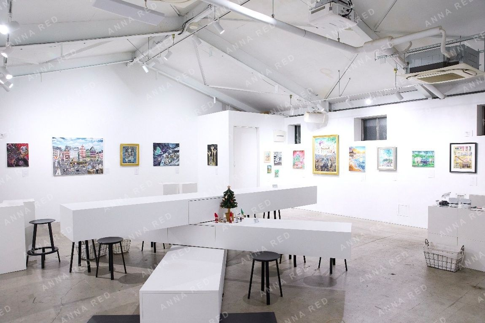
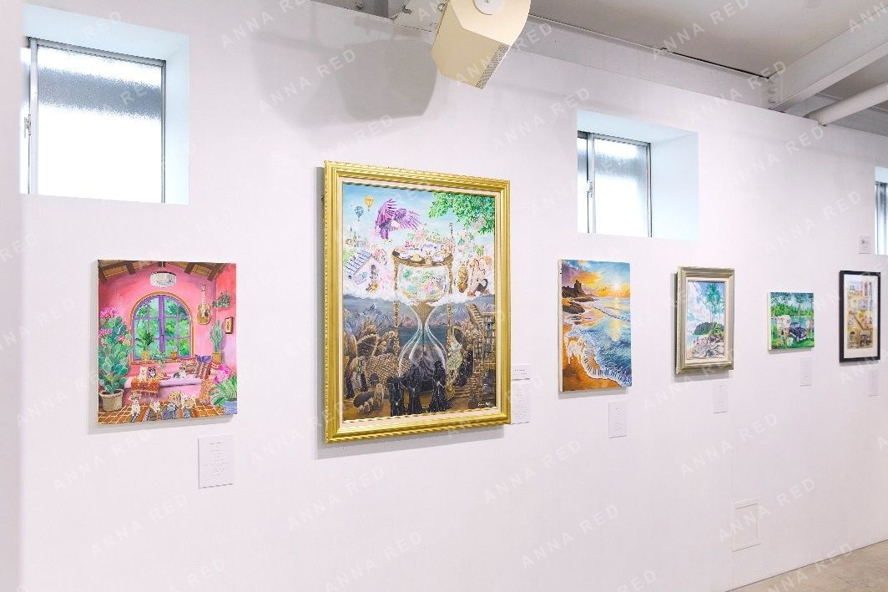
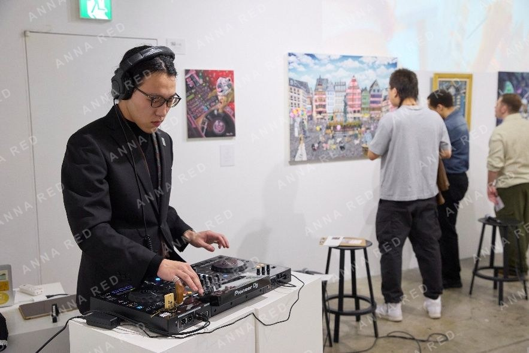
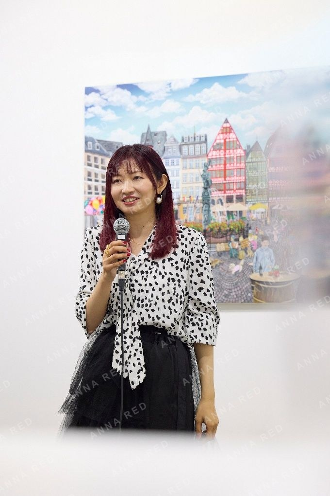
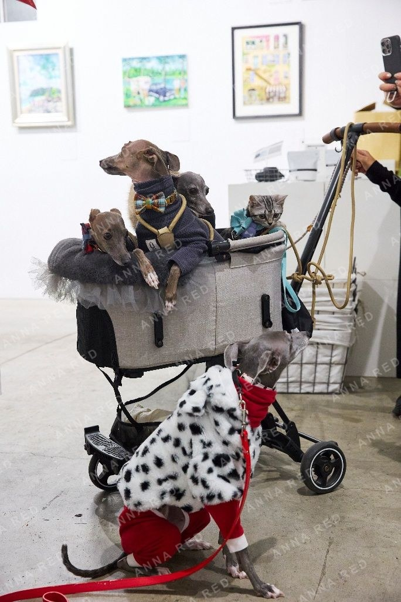
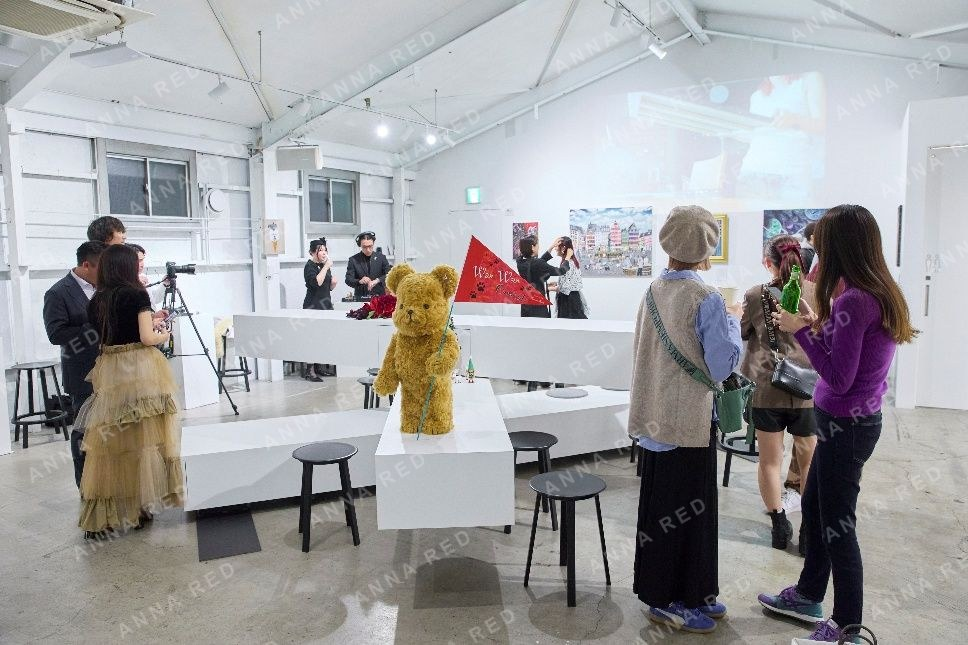

ANNA REDの活動11周年を記念した特別企画として、 「Wan Wanカーニバル 〜犬のいる絵画展〜」を開催しました。
"11（ワンワン）周年"にちなみ、犬が登場する作品だけを集めたユニークな展示となり、 会場には多くの愛犬家の方々やワンちゃんたちにもご来場いただきました。
オープン直後のワンちゃんたちが列をなして駆け上がってきてくれた様子は、 まさに日常のファンタジーでした。
展示された原画はすべて新作。 犬と人が共に過ごす日常のワンシーンや、 ANNA REDならではのファンタジーが混ざり合う世界をお楽しみいただきました。


会場となった新木場のカフェ soko station 146は、 ギャラリースペースを併設した開放的な空間で、 美味しいフードやドリンクとともにアートを楽しめる場所です。
ここは、ANNA REDの10周年記念個展「Fantasy10」を開催させていただいた思い出の会場でもあり、 再びこの場所で展示を行えたことをとても嬉しく思っています。
15日にはレセプションパーティーも開催。 トークショーやDJの演出とともに、来場者の皆さまが作品のある空間で同じ時を共にする、 賑やかで創造的な時間となりました。
愛犬と一緒にアートを楽しめる展示として、 人と犬、そして作品が自然に交わる、"カーニバル"のような展示会となりました。
ご来場いただいた皆さま、そしてワンワンたちにも心より感謝申し上げます。


